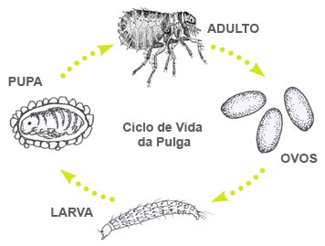

PULGAS - TIPOS
Cientificamente conhecida por Ctenocephalides canis, a pulga do cão não é a mais comumente encontrada neste hospedeiro. Na maioria das vezes o cão possui a espécie Ctenocephalides felis felis, também conhecida por pulga do gato.
A pulga do gato, Ctenocephalides felis felis, é capaz de transmitir doenças ao homem, além de alergia. A pulga do gato serve como hospedeiro intermediário de um parasita intestinal (Dipylidium caninum), que é transmitido ao animal quando este ingere uma pulga que contém o cisto do verme. Esta espécie de pulga ataca vários hospedeiros, tais como, o homem, o rato, o gato e o cão.
Cientificamente conhecida por Pulex irritans a pulga do homem é uma espécie cosmopolita. Apesar de possuir o nome comum de pulga do homem ataca também outros hospedeiros, como cães, gatos e porcos. Raramente é encontrada no rato. Sua ocorrência é maior em casas muito velhas.
A pulga do rato, Xenopsylla cheopis, é uma espécie cosmopolita de grande importância para a saúde humana, pois transmite a peste bubônica do rato para o homem. Apesar de não ser uma praga doméstica, existem relatos sobre pessoas que foram picadas por esta espécie de pulga em sua residência. É mais freqüentemente encontrada em cidades que possuem portos, pois neste ambiente proliferam muitos ratos. É cosmopolita, pois foi transportada para todos os lados do mundo através do comércio. O hospedeiro mais comum para esta espécie de pulga é o rato, principalmente as ratazanas, ou rato de esgoto, Rattus norvegicus; o rato de telhado, ou rato preto, Rattus rattus, e o camundongo, Mus musculus. No Estado de São Paulo a espécie Xenopsylla brasiliensis, que também é uma espécie de pulga do rato é mais comumente encontrada que Xenopsylla cheopis.
As pulgas são insetos holometábolos, isto é, seu ciclo de vida compreende a fase de ovo, larva (3 ínstares), pupa e adulto. Este ciclo se completa por volta de 30 dias, dependendo das condições de temperatura e umidade. Somente o adulto é hematófago, isto é, alimenta-se de sangue que pode ser de aves ou mamíferos. Algumas espécies de pulgas dão preferência a uma única espécie de hospedeiro, porém, a maioria pode sugar várias espécies de animais. Por este motivo, as pulgas transmitem doenças ao homem e a outros animais.

Os ovos das pulgas são depositados sobre o hospedeiro, em seu ninho, ou no chão. São esbranquiçados, lisos e ovais.
As larvas das pulgas não possuem pernas, são cegas e evitam a luz. Seu alimento consiste de fezes das pulgas adultas, pele, pêlo e penas. Elas não sugam sangue.
As pupas possuem um casulo de seda fabricado pela larva de último ínstar onde ficam aderidos pêlos de animais, poeira e outras sujeiras. Em aproximadamente 5 a quatorze dias as pulgas adultas emergem ou permanecem em repouso dentro do casulo até a detecção de alguma vibração, que pode ser ocasionada pelo movimento de um animal ou homem e quando um animal deita-se sobre ela. A emergência pode ser ocasionada também pelo calor, barulho ou pela presença de dióxido de carbono que significa que uma fonte potencial de alimento está presente.
As fêmeas adultas não conseguem depositar ovos sem uma refeição, mas os adultos, tanto machos, quanto fêmeas podem sobreviver de dois meses a um ano sem se alimentar. As vezes, famílias que viajam por um período razoável de tempo, quando voltam, encontram a residência infestada por pulgas. Isto ocorre porque a casa fica fechada sem hospedeiros (cães e gatos). Assim que a família retorna, ela é atacada pelas pulgas que nasceram no período.
Após a eclosão, a larva alimenta-se das fezes das pulgas adultas. Por esta razão, os adultos ingerem mais sangue do que necessitam. Uma pulga pode alimentar-se 2 a 3 vezes ao dia e cada repasto dura cerca de dez minutos. A longevidade dos adultos varia de espécie para espécie pois, depende da temperatura, umidade e da freqüência com que a pulga se alimenta. Em condições de laboratório, Pulex irritans pode viver até 513 dias e Xenopsylla cheopis 100 dias.
As pulgas adultas possuem coloração marrom avermelhada, corpo endurecido (difícil de esmagar entre os dedos), possuem três pares de pernas (pernas posteriores mais largas para possibilitar o salto) e são achatadas verticalmente, o que facilita seu movimento entre os pêlos ou penas do hospedeiro. São excelentes saltadoras, podendo saltar verticalmente uma altura de aproximadamente 18 cm e horizontalmente 33 cm. O aparelho bucal é do tipo mastigador.
Fonte: Pragas Online